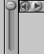

Página inicial de Cleopatra
Para ver los objetos de Arte Antiguo en "primer plano," sus "Historias," y escuchar las pronunciaciones del Glosario, usted necesitará QuickTime. Puede descargar el programa gratuito al hacer clic abajo.
http://www.apple.com/quicktime/download/
PRIMER PLANO: QuickTime VR’s
Es posible observar los objetos desde diferentes planos al hacer clic dentro de ellos y mover el ratón.
Esta es su barra de herramientas. Use el para acercarse y el para alejarse.
HISTORIAS: Películas en QuickTime
Controles de vídeo
Esta es su barra de herramientas. Use el
para que empiece y el para pausar.
Usted puede hacer pasar manualmente la película al deslizar hacia delante o hacia atrás la línea indicadora.
Los botones a la derecha de la barra de herramientas le permiten avanzar o retroceder algunas imágenes individuales a la vez
Controles de audio
Puede ajustar el volumen del sonido de la película al mantener presión sobre y deslizar hacia arriba o hacia abajo.
Puede aumentar el volumen al oprimir la "tecla de las mayúsculas" en tanto cambia el volumen.

Si no puede abrir estas "Historias," necesitará descargar QuickTime en su computadora. (Ver arriba.)
GLOSARIO: Audio
Puede escuchar las entradas del glosario al hacer clic en
Puede ajustar el volumen del sonido de la película al mantener presión sobre y deslizar hacia arriba o hacia abajo.
Puede aumentar el volumen al oprimir la "tecla de las mayúsculas" en tanto cambia el volumen.
Si no puede abrir estos archivos de audio, necesitará descargar QuickTime en su computadora. (Ver arriba.)
PLANES DE LECCI"N: Impresión
Pueden imprimirse Planes de lección individuales por medio de su navegador (browser) de Internet.
También es posible imprimir juegos completos de Planes de lección para cada uno de los tres grados escolares mediante Adobe Acrobat
Hay un enlace directo hacia este programa gratuito, disponible en la página de "Imprimir Lecciones."
También puede visitar su página de Internet: http://www.adobe.com/ products/acrobat/readstep.html
Ayuda